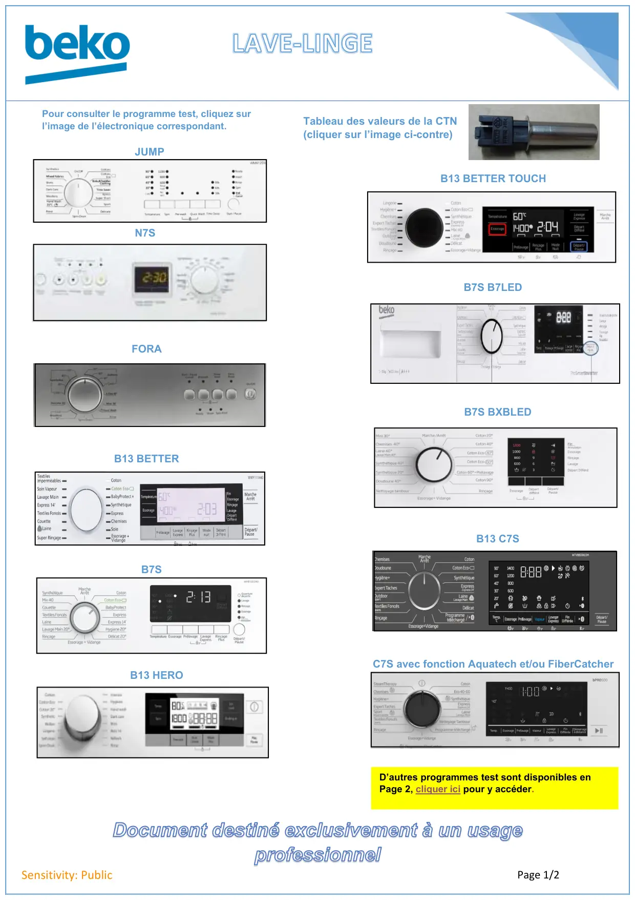

Lave linge page accueil

Document destiné exclusivement à un usageprofessionnelPage 1/2Sensitivity: PublicJUMPN7SFORAB13 BETTERB7SB13 HEROB13 BETTER TOUCHB7S B7LEDB7S BXBLEDB13 C7SPour consulter le programme test, cliquez surl’image de l’électronique correspondant.Tableau des valeurs de la CTN(cliquer sur l’image ci-contre)C7S avec fonction Aquatech et/ou FiberCatcherD’autres programmes test sont disponibles enPage 2, cliquer ici pour y accéder.
1 / 1Liens de ce document (13)
PDFLave linge page accueil page 21 p.PDFProgrTest lave linge N7S WMD56.57.67.68xxx Fr3 p.PDFProgrTest lave linge JUMP Fr16 p.PDFProg Test lave linge Electronique B13 BETTER2 p.PDFProgrTest lave linge FORA Fr4 p.PDFProgTest lave linge B7S27 p.PDFProgrTest lave linge B13 HERO1 p.PDFProgTest lave linge Better Touch Fr2 p.PDFProg Test lave linge Electronique B7S B7LED2 p.PDFProgr Test lave linge Electronique B7S BLED3 p.PDFProg Test lave linge B13-C7S2 p.PDFProg Test lave linge C7S Aquatech FiberCatcher2 p.PDFTableau Valeur CTN lave linge2 p.